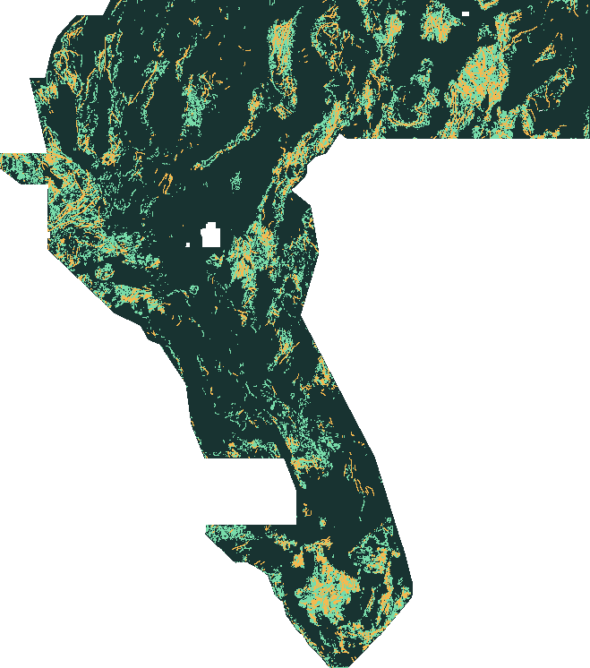

A hypothesis is not a result.
Executed arms, pre-registered selection rules, frozen before audit. Every local number below is a published-catalogue surrogate—not a hidden-label or leaderboard score.
A rotated partition, a support sweep and a β/α-weighted control.
Frozen policy: tversky-weighted-classifier at support target 4.0000% (floor 0.4941), halo 2, tip extension 5. The third published file uses the pre-registered wide rule at support target 12.0000%.
| Arm | Objective | Training | Emitted (tuning) | Robust DTI |
|---|---|---|---|---|
| two-catalogue-regressor | kernel-regression | 1.4 min | 3.60% | 0.1903 |
| tversky-weighted-classifier Selected | weighted-classification | 1.4 min | 3.43% | 0.1965 |
| Arm | Audit · gap | Audit · all | Audit · known | min |
|---|---|---|---|---|
| two-catalogue-regressor | 0.1864 | 0.2013 | 0.1728 | 0.1728 |
| tversky-weighted-classifier | 0.2009 | 0.2120 | 0.1731 | 0.1731 |
| Reference | File | Tune gap | Tune all | Tune known | Audit gap | Audit all | Audit known |
|---|---|---|---|---|---|---|---|
| gapfinder-v2-fusion | gapfinder-v2-fusion-20260925T045011Z-682a7bb | 0.698 | 0.624 | 0.017 | 0.658 | 0.607 | 0.016 |
| gapfinder-v2-ml | gapfinder-v2-ml-20260925T045012Z-73e97f79f6. | 0.344 | 0.321 | 0.019 | 0.306 | 0.294 | 0.018 |
| riftline-published | riftline-context-distance-20260925T011817Z-7 | 0.134 | 0.193 | 0.262 | 0.118 | 0.163 | 0.284 |
| legacy-ens12 | submission.tif | 0.101 | 0.163 | 0.245 | 0.104 | 0.150 | 0.236 |
| Comparison | Δ gap | CI95 | Δ all | CI95 |
|---|---|---|---|---|
| tversky-weighted-classifier vs two-catalogue-regressor | 0.0145 | [-0.002, 0.040] | 0.0107 | [-0.003, 0.033] |
all-fold refit (fraction-consistent sampling)
- Policy
- s=4.0000% h=2 L=5
- Refit support
- 3.78%
- Holdout support
- 3.85%
- Refit accepted
- yes
- Model file
- tversky-weighted-classifier-refit.joblib
- Public score
- Unknown · no upload performed
Bounded claims only.
- Local truth is the public SGMC layer and the supplied labels, never the hidden expert labels.
- The partition is a half-block rotation of v2's lattice; fold 2 here overlaps v2 regions.
- SGMC traces inside the fusion file cannot be scored locally without circularity.
- Binary emission is a deliberate choice justified by the metric algebra, not a calibrated probability.
- No 1 m DEM, no GPU, no hidden labels, no authenticated upload.
Gapfinder: learn where the supplied labels are incomplete.
The organisers confirmed that supplied fault pixels are masked from scoring and that hidden truth is any fault not already in the USGS/INGENIOUS labels (forum 11516, 11536). Gapfinder therefore trains on a second, independent public catalogue—the USGS State Geologic Map Compilation (SGMC)—and never emits a pixel on a supplied label. Three target definitions compete: supplied labels only, SGMC only, and both. Each is scored on a held-out tuning region against three proxies: gap (SGMC faults >300 m from supplied labels), all SGMC faults, and known (held-out supplied faults, standing in for hidden faults of the supplied type). The selection rule is the minimum of gap, all, known; the support cap is 8%.
| Arm | Policy | Support | gap | all | known |
|---|---|---|---|---|---|
| qfault-target | f=0.25 h=2 L=5 | 5.07% | 0.097 | 0.114 | 0.172 |
| two-catalogue-target SELECTED | f=0.40 h=2 L=0 | 4.46% | 0.187 | 0.187 | 0.173 |
| sgmc-target | f=0.25 h=2 L=0 | 7.93% | 0.212 | 0.216 | 0.142 |
| Arm / file | Policy | Support | gap | all | known |
|---|---|---|---|---|---|
| qfault-target | f=0.25 h=2 L=5 | — | 0.086 | 0.112 | 0.192 |
| two-catalogue-target | f=0.40 h=2 L=0 | — | 0.182 | 0.176 | 0.150 |
| sgmc-target | f=0.25 h=2 L=0 | — | 0.193 | 0.192 | 0.159 |
| riftline-published (trained on folds incl. audit) | reference file | — | 0.092 | 0.156 | 0.328 |
| legacy-ens12 | reference file | — | 0.092 | 0.142 | 0.226 |
| Comparison | Proxy | Observed Δ DTI | 95% interval | Blocks |
|---|---|---|---|---|
| two-catalogue-target vs qfault-target | gap | +0.096 | [+0.053, +0.129] | 7 |
| two-catalogue-target vs qfault-target | all | +0.063 | [+0.019, +0.096] | 7 |
| sgmc-target vs qfault-target | gap | +0.106 | [+0.065, +0.128] | 7 |
| sgmc-target vs qfault-target | all | +0.080 | [+0.041, +0.100] | 7 |

All-fold refit accepted: support 3.46% vs 3.95% for the holdout model (gate: within the 8% cap). The published files use that model with the frozen policy two-catalogue-target f=0.40 h=2 L=0.
Gapfinder limits that can change the conclusion
- Local truth is the public SGMC fault layer (~1:1,000,000 compilation), not the hidden expert labels.
- SGMC-direct traces cannot be scored locally without circularity; fusion vs ml is a leaderboard experiment.
- One rotated split (tune fold 2, audit fold 3); block bootstrap measures spatial sampling noise only.
- Tip extensions are geometric hypotheses; truncation self-tests do not prove real continuations.
- No 1 m DEM, no GPU, no hidden labels, no authenticated upload.
- Selection weakness: the known proxy ignores halo and tip, so for some arms those were decided by the lower-mass tie-break rather than evidence.
- Fold 3 was inspected during the post-hoc v1 diagnostic, so the v2 audit is not an independent test.
- The SGMC fault raster is inherited from the original project (legacy/scripts/fetch_proxy_faults.py: official USGS FeatureServer, fault classes only, GeoJSON pinned by SHA-256). The newer 2026 SGMC release is not used yet.
- Every file is strictly binary {0, 1}. The metric weights hits and false positives by the predicted value, and soft emission was not re-tested in Gapfinder (Riftline tested it; binary won there).
Gapfinder v1 chose a source-specialised model.
v1 selected sgmc-target f=0.35 h=1 L=0 by min(gap, all) on the tuning fold. A post-hoc check on held-out supplied faults (the “known” column, never used by v1) showed it finds unseen supplied-type faults poorly (0.108). Hidden truth may resemble either catalogue, so v2 added this proxy to the selection rule. Because we looked at fold 3 first, the v2 audit is not independent; that is disclosed in the v2 config.
| Arm | Policy | Support | gap | all | known |
|---|---|---|---|---|---|
| qfault-target | f=0.22 h=2 L=5 | — | 0.094 | 0.118 | 0.200 |
| two-catalogue-target | f=0.35 h=2 L=0 | — | 0.190 | 0.187 | 0.172 |
| sgmc-target | f=0.35 h=1 L=0 | — | 0.178 | 0.181 | 0.108 |
Support curve (sgmc-target, halo 1, tuning fold): the proxy peaks well inside the 8% cap
| Floor | Support | gap | all |
|---|---|---|---|
| 0.25 | 8.13% | 0.209 | 0.223 |
| 0.28 | 6.67% | 0.215 | 0.228 |
| 0.30 | 5.72% | 0.216 | 0.228 |
| 0.32 | 4.81% | 0.216 | 0.226 |
| 0.35 | 3.55% | 0.210 | 0.217 |
| 0.38 | 2.44% | 0.191 | 0.195 |
| 0.40 | 1.81% | 0.166 | 0.170 |
| 0.45 | 0.66% | 0.085 | 0.090 |
Riftline context-distance
Deployment guard: the all-data refit emitted 11.30% against a 8% cap and was rejected. The unchanged tuning-selected model, trained on folds [2, 3], is published with 6.82% support instead. The fallback was introduced after the original density failure, not pre-registered before that first attempt. No arm, threshold or cap was changed using the audit labels. Measured deployment record ↗
The repeated fixed-fold audit is diagnostic, not a fresh independent replication. The original run’s selected context field was bit-identical across its two executions; its raw-feature control was not. See the dated repeatability record, which does not certify every future retraining run.
The controlled comparison
Same samples · same spatial split| Model arm | Features | Unlabeled weight | Tune · union | Audit · known | Audit · proxy | Audit · union |
|---|---|---|---|---|---|---|
| raw-distance | 19 | 1.0 | 0.1927 | 0.1413 | 0.1653 | 0.2089 |
| context-distanceSelected on tuning | 67 | 1.0 | 0.2308 | 0.1957 | 0.1579 | 0.2361 |
| context-pu | 67 | 0.25 | 0.2273 | 0.1832 | 0.1589 | 0.2252 |
Known = supplied training catalogue in unseen geography. Proxy = inherited SGMC code-2 faults, absent within 300 m of known labels. Union = recomputed metric on both populations, not an average of their scores. None is the private expert dataset.
context-distance
- Emission
- binary-ridge
- Confidence floor
- 0.22
- Seed
- 20260925
- Candidate policies evaluated
- 24
- Training runtime
- 6.4 min · CPU
- Public score
- Unknown · no upload performed
Frozen selection SHA-256992f1e5a2eda37cfed61d769e3bc217df1d57f195ab1290f29559e72ae5ee839
No random-pixel shortcut.
- Block size / interior buffer
- 51.2 km / 3.2 km
- Training folds
- [2, 3]
- Tuning fold
- 0
- Untouched audit fold
- 1
- Audit area
- 939,230 pixels
- Audit blocks with valid area
- 8
Only one fixed split has been run. Spatial units are limited. The 32-pixel guard covers the 30-pixel feature radius, but does not fully separate all feature-plus-postprocessing support; this is not proof of complete statistical independence. We do not present a precise confidence interval or a claimed statistical win from this experiment.
What actually makes this different?
Regress a 300 m triangular proximity field from known labels, not the inherited hard-label ensemble.
Test multiscale, mask-aware relief and curvature features without injecting coordinates or catalogue values as inputs.
Extract ridges along their local Hessian normal. Compare soft and binary confidence emissions on tuning data.
452,194 valid pixels differ from the archived artifact. The filename alone is not evidence of a new strategy.
Limits that can change the conclusion
- No hidden expert labels or authenticated competition upload; leaderboard gain is unknown.
- Only one fixed spatial train/tune/audit split; not multi-fold proof of superiority.
- Published SGMC catalogue used for tuning is not source-independent of the SGMC audit catalogue.
- Cautious unlabeled weighting is heuristic, not an unbiased positive-unlabeled risk estimator.
- 100 m context cannot recover all subpixel scarps; no 1 m DEM was used.
- Published model trains only on folds 2 and 3; full-data refit was rejected for excessive support.
- Deployment fallback was introduced after the initial density failure; the already-read audit is diagnostic, not a new independent replication.
- Some template-valid boundary pixels have missing features and use the model's native missing-value routing.